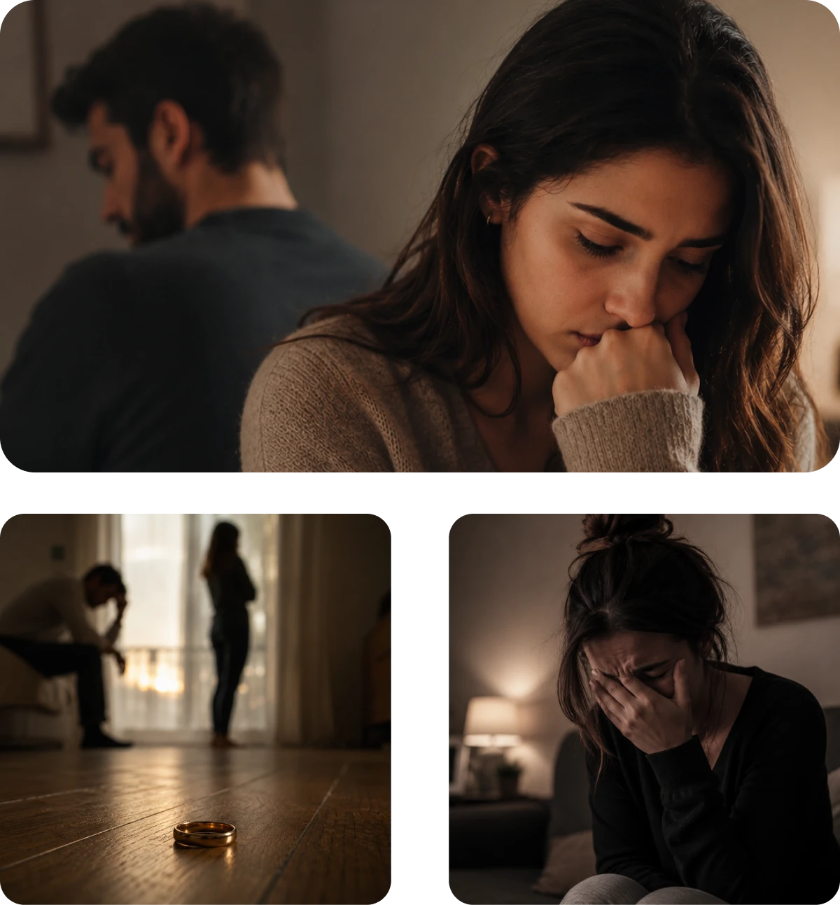
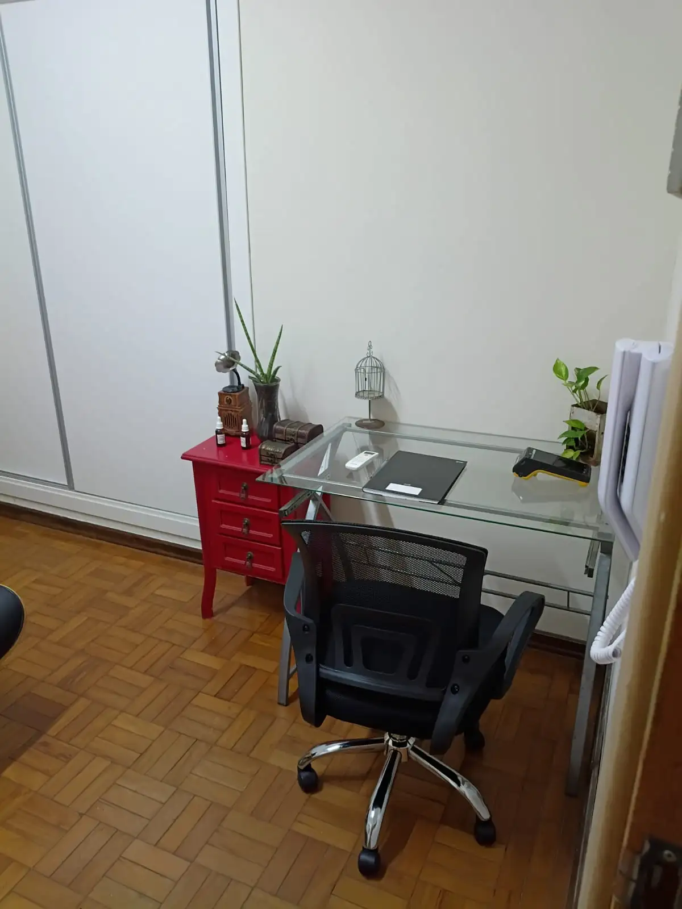

Psicóloga em Americana – SP · Consultório no Jardim Girassol
Conquiste seu equilíbrio emocional com um cuidado humano e perto de você.
Atendimento psicológico presencial em Americana para quem busca um consultório acolhedor, reservado e próximo de casa para superar crises, gerenciar emoções e reconquistar a qualidade de vida.
Vanessa PenachionePsicóloga em Americana · CRP 06/91299
ROLE
Psicóloga em Americana – SPAtendimento PresencialJardim GirassolPsicóloga em Americana – SPAtendimento PresencialJardim GirassolPsicóloga em Americana – SPAtendimento PresencialJardim GirassolPsicóloga em Americana – SPAtendimento PresencialJardim Girassol
Chegou o momento de cuidar de si
Como a psicoterapia presencial pode te ajudar hoje?

Sair da rotina de casa ou do trabalho e ter um espaço exclusivo, seguro e próximo de você faz toda a diferença no seu processo terapêutico:
01Ansiedade e Estresse: sensação contínua de sobrecarga, pensamentos acelerados e dificuldade de relaxar no dia a dia.
02Dificuldades nos Relacionamentos: conflitos amorosos, familiares ou profissionais, dependência emocional e busca por limites saudáveis.
03Crises Emocionais e Autoestima: dúvidas sobre o futuro, sensação de estagnação, falta de confiança e busca por autoconhecimento.
04Reconstrução após Relacionamento Abusivo: apoio especializado para mulheres que desejam recuperar a autonomia e sair emocionalmente do ciclo.
05Traumas e Momentos Difíceis: processos de luto, transições difíceis de vida, términos de ciclo ou superação de experiências dolorosas.
Não importa a gravidade do problema: em nosso consultório em Americana, você encontra acolhimento e direção para construir um novo caminho.
Atendimento Presencial em Americana
Cuidado especializado, pertinho de você.
Localizada no Jardim Girassol (Rua Uruguai, 247), a Clínica Vanessa Penachione oferece um ambiente tranquilo, climatizado e de fácil acesso para você fazer terapia perto de casa.

No Consultório · Americana
Psicoterapia individual
Sessões presenciais individuais para quem valoriza o contato humano olho no olho, a escuta próxima e um ambiente reservado fora da rotina doméstica.
Ansiedade e estresseAutoestima e crisesSuperação de traumasAutoconhecimentoJardim Girassol – Americana
Encontros presenciais mediados no consultório para casais que buscam reconstruir o diálogo, além de sessões presenciais de acupuntura para equilíbrio integral.
Terapia de Casal PresencialDiálogo e reconexãoAcupuntura em AmericanaRua Uruguai, 247Segunda a Sábado
Na Clínica Vanessa Penachione, cada paciente é recebido em sua singularidade. Um processo terapêutico presencial ético, profundo e voltado para a vida real.
01
Escuta Presencial Livre de Julgamentos
Um espaço físico reservado e acolhedor em Americana, onde você pode se desconectar das pressões externas e ser verdadeiramente ouvido.
02
Compreensão das Emoções
Clareza para enxergar padrões repetitivos, compreender conflitos internos e dar novo sentido às experiências vividas.
03
Ferramentas Práticas e Autonomia
Desenvolvimento de recursos emocionais sólidos para tomar decisões, estabelecer limites e reconstruir sua estabilidade no dia a dia.
Cuidar da saúde emocional não é sinal de fraqueza. É escolher viver com mais consciência, leveza e autonomia sobre a própria história.
Clínica Vanessa Penachione · Americana – SP
+4.000atendimentos realizados
18anos de experiência clínica
+100avaliações 5 estrelas no Google
100%presencial, ético e com sigilo absoluto
V
Conheça a fundadora
Dra. Vanessa Penachione
Psicóloga CRP 06/91299Consultório no Jardim Girassol – Americana18 anos de experiênciaAbordagem Fenomenológico-Existencial
Com 18 anos de experiência na psicologia clínica em Americana, meu compromisso à frente da Clínica Vanessa Penachione é oferecer um consultório seguro, ético e livre de julgamentos pertinho de você.
Através da abordagem Fenomenológico-Existencial, ajudo meus pacientes a compreenderem suas emoções, desenvolverem ferramentas práticas para lidar com os desafios do cotidiano e reconstruírem sua estabilidade emocional.
Seja para tratar a ansiedade, fortalecer relacionamentos, superar uma fase difícil ou investir no seu autoconhecimento, nossas portas em Americana estão abertas para caminhar ao seu lado.
+100avaliações 5 estrelas verificadas no Google
18 anostransformando vidas no consultório em Americana
Quem encontrou apoio na Clínica Vanessa Penachione.
Mais de 100 avaliações 5 estrelas de pacientes que vivenciaram um processo terapêutico humano, ético e transformador em Americana.
★★★★★ Google
“Existem profissionais que exercem uma profissão, e existem aqueles que transformam vidas. Ela faz parte do segundo grupo. Sua escuta atenta, sua autenticidade e sua capacidade de acolher sem julgamentos fizeram toda a diferença na minha trajetória.”
Luiz RossignoliAvaliação verificada no Google
★★★★★ Google
“Cheguei fragilizada, sem forças e sem conseguir enxergar uma saída. Aos poucos, através de um trabalho sério, humano e extremamente competente, fui me reconstruindo. Minha psicóloga me ajudou a recuperar minha autoestima, minha confiança e minha esperança.”
Alexandra dos SantosAvaliação verificada no Google
★★★★★ Google
“Ao longo de mais de 5 anos de acompanhamento, amadureci emocionalmente, aprendi a lidar melhor com meus sentimentos e desenvolvi mais autoconhecimento. Sempre me senti ouvida, respeitada e cuidada com muita dedicação e humanidade.”
Daiane Pereira SantosAvaliação verificada no Google
★★★★★ Google
“NOTA 1.000! Só tenho a agradecer pelo incrível trabalho que você fez. Você não apenas agregou muito valor à minha vida, como também foi a única pessoa que conseguiu resolver o meu problema e transformar a minha vida. Recomendo de coração!”
Flavio FerreiraAvaliação verificada no Google
★★★★★ Google
“A Vanessa é incrível. Uma profissional que sabe verdadeiramente escutar e também falar quando necessário. As sessões são incríveis!”
Izabelle MalvassoraAvaliação verificada no Google
★★★★★ Google
“Impossível não se sentir acolhida por essa profissional, que transforma vidas com leveza e empatia. Foi incrível, me ajudou demais em uma fase confusa!”
Simone Vargas & Bárbara de PaulaAvaliações verificadas no Google
Consultório em Americana – SP
Nossas portas estão abertas para você.
Um espaço tranquilo, reservado e próximo de casa no Jardim Girassol, preparado para que você se sinta acolhido e em segurança desde a chegada.
Endereço em AmericanaRua Uruguai, 247 – Jardim Girassol Americana – SP, CEP 13465-680
Horário de Atendimento PresencialSegunda a Sábado (com hora marcada)
Ficou com alguma dúvida sobre as consultas presenciais em Americana? Chame nossa clínica no WhatsApp.
Onde fica localizada a Clínica Vanessa Penachione em Americana?
Nosso consultório fica na Rua Uruguai, 247 – Jardim Girassol, em Americana – SP (CEP 13465-680), em um bairro tranquilo, seguro e de fácil acesso para quem mora em Americana e região.
Quais são os dias e horários de atendimento no consultório?
Atendemos presencialmente de segunda a sábado, sempre com horário agendado previamente pelo WhatsApp para garantir total privacidade e pontualidade.
Por que fazer psicoterapia presencial perto de casa?
O atendimento presencial oferece um ambiente neutro, silencioso e acolhedor fora da rotina doméstica e do trabalho, favorecendo o contato olho no olho, a concentração e um momento exclusivo para cuidar de você.
Como funciona a primeira consulta presencial?
Ao chegar ao consultório, você é recebido em um ambiente reservado e confortável. Na primeira sessão, conversamos sem pressa e sem julgamentos sobre o que trouxe você à terapia e alinhamos como será o seu acompanhamento semanal.
Quais especialidades são atendidas presencialmente na clínica?
Realizamos psicoterapia individual (ansiedade, estresse, autoestima, depressão, luto e superação de relacionamentos abusivos), terapia de casal presencial e sessões de acupuntura.
A clínica emite recibo para reembolso de plano de saúde?
Sim. Emitimos recibo regulamentado para que você possa solicitar reembolso das consultas presenciais junto ao seu convênio médico.
Primeiro passo
Comece hoje a cuidar da sua saúde emocional.
Entre em contato pelo WhatsApp e agende sua consulta presencial no consultório da Clínica Vanessa Penachione, no Jardim Girassol em Americana.